Winged MindVocê está prestes a acessar o sistema ETAN para registro biométrico. Enquanto o sistema carrega, confira as dicas ao lado — elas tornam o processo mais rápido e seguro. ✨
💡 Dicas para você
Antes de realizar a captura, certifique-se de que as mãos estão limpas e secas. Resíduos de luva ou álcool em gel podem dificultar a leitura do sensor biométrico.
Apoie a polpa do dedo (parte central) diretamente sobre o sensor. Evite inclinar ou apoiar apenas a ponta — o sensor precisa capturar o máximo de área possível para uma leitura precisa.
Acontece! Retire o dedo, aguarde 2 segundos e tente novamente com leve pressão. Se persistir, tente outro dedo — indicador ou médio costumam ter os melhores resultados.
A biometria capturada identifica exclusivamente cada paciente ou profissional. Este processo garante que registros de presença e procedimentos não possam ser falsificados.
Um registro biométrico bem-feito na entrada elimina a necessidade de verificações manuais durante o turno. Quanto mais precisa a captura inicial, mais fluido será o dia a dia de toda a equipe.